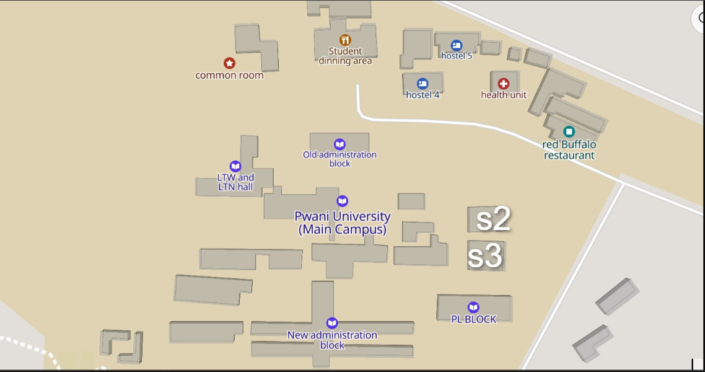

Campus Map
A simplified guide to key buildings. Not to scale — click a building for details.
Select a building
Click any shape on the map to see details.
Reference Photo
A real view of the main cluster, showing Old Administration, LTW/LTN, PL Block, and Hostels 4 & 5.

Find Us
The map above is a simplified campus guide. For real directions to Pwani University, use the map below.